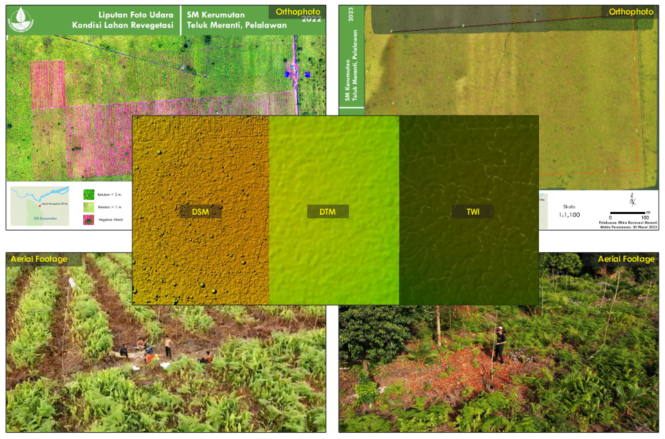

Drone Mapping for Revegetation Monitoring
Sat 28 Mar 2026 • 16:19 GMT by Spatiality

Mapping interface used for farmer data collection and spatial traceability workflow. Documentation by Spatiality
Aerial mapping is known for its capability to provide detailed initial condition for many projects such as mining, housing, to forestry, better than free satellite imagery. It is called orthophoto, obtained through drone mapping capture all coverage area through its flight plan. But most unexperienced pilot drone failed to complete the mission due to dismissed the flight procedure. To produce a high-quality product, we have to learn the aircraft specification and the coverage area condition, then prepare the GCP and series of flight plans to ensure the aircraft could fly away and home safely. The pilot needs to understand their surrounding, make sure the fly path is not so narrow and obstacle-less, weather condition, and monitor where their aircraft is going, including its remaining battery to return home safely.
Through orthophoto, we can capture the initial condition before land clearing and arrange a plantation design, identify existing tree and its structure, locate its nursery and watchpost with a wide visibility. We can also extract the DSM data to perform terrain and hydrologic analysis to optimize its survival rate. If the aircraft is equipped with infrared sensor, we can monitor plant health. But its basic capability is more than enough to arrange plantation design and monitoring.
This app is not limited to a specific activity. Other uses like inventory, census, scientific survey, etc can be implemented using this app.
Custom Toolbox
Mapping interface used for farmer data collection and spatial traceability workflow. Documentation by Spatiality
As they go all the place to map farmer’s land, I build a toolbox to automate the data compilation processing in bulk. The workflow is simple but require some lines of python code for additional process. The exported data from Avenza Map is in kmz, I converted to shapefile then input it to the toolbox to do all the hard work. These are data structure tidying, codification, calculating area, pull data for land zone utilization, peatland, concession, and built up coverage.